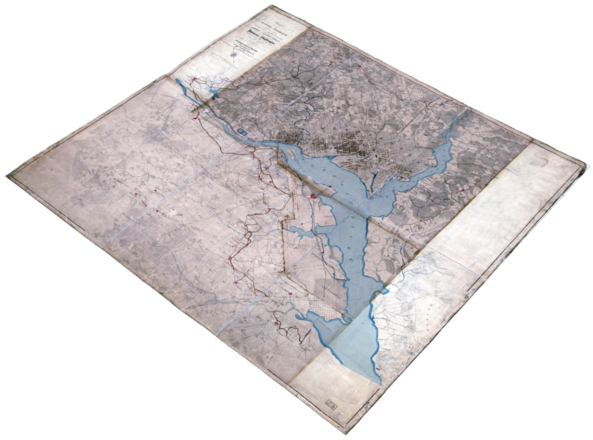

Defenders of the Union
Mapping the Civil War Forts of Washington, DC
During the Civil War, Washington, DC was one of the most heavily fortified cities in the world. Surrounded by a ring of over sixty forts and almost one hundred batteries, the national capital defended itself from assault by Confederate forces. This application was created to provide an immersive and interactive way to understand the defences of the Washington, DC from the perspective of the both Civil War-era and the present day.


The Embattled Capital
Explore Every Fort
The Forts Today
Explore the defenses of Civil War-era Washington, DC that protected the capital from assault between 1861-1865.
Zoom in and click on individual fortifications to see pictures and details on armaments, garrisons and gun ranges.
Access map tools to search for individual forts and see the defenses in the context of present-day capital region.